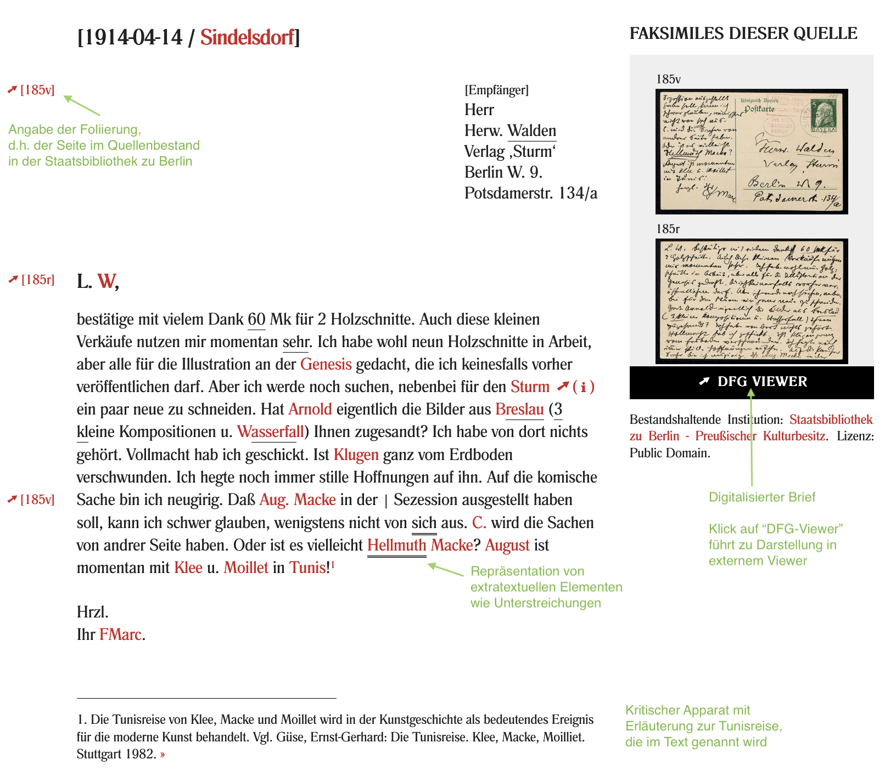

6 Briefedition ‘Der Sturm’
Die Webseite https://sturm-edition.de/ dient als Portal für die Arbeit mit Quellen zum avantgardistischen STURM-Unternehmen, das mit der Gründung der gleichnamigen Zeitschrift in Berlin im Jahr 1910 durch Herwarth Walden begann und mit den nachfolgenden Gründungen einer Galerie, einer Bühne und eines Verlags internationale Bedeutung erlangte. Neben Walden waren weitere Akteur:innen an diesem Unternehmen beteiligt, und bisher (Stand November 2022) sind 179 Briefe von drei Künstler:innen an Walden im Portal verfügbar. Zudem wurden die Zeitschrift, Ausstellungskataloge, Jahrbücher, Verlagsschriften und weitere Materialien wie Plakate, Fotografien oder Einladungskarten digitalisiert.
Gehen Sie auf die Startseite und lesen Sie die Kurzbeschreibung zu den Briefen, Personen, Orten und Werken, um eine erste Idee vom Material zu bekommen. Klicken Sie dann die Briefabteilung an und schauen sich Brief Nummer 8 von Franz Marc an Herwarth Walden an.
Wie Sie sehen können, wurde der Brief nicht nur digitalisiert, also in ein digitales Bild umgewandelt, das Sie über einen externen Viewer betrachten können, sondern auch historisch-kritisch ediert und nach den Richtlinien der TEI P5 in XML codiert.
Was bedeutet das genau, und wieso ist es wichtig für unsere Arbeit als Historiker:innen?
Bei einer historisch-kritischen Edition wird keine reine Leseversion eines Textes erstellt, wie man es beispielsweise von der Textdarstellung in einem Roman kennt, sondern zusätzliches Material zum besseren Verständnis des Texts herangezogen und als Information in einem sog. kritischen Apparat zur Verfügung gestellt. Beispielsweise werden Quellen, die ein:e Verfasser:in für bestimmte Textpassagen als Vorlage genutzt hat, genannt, oder auf Ereignisse während der Entstehungszeit, die Einfluss auf den Text hatten, verwiesen. Entitäten wie Personen, Orte, Werke usw. werden erklärt oder kommentiert. Der Text selbst wird so quellengetreu wie möglich dargestellt, orthographische oder grammatikalische Fehler werden nicht korrigiert, und meist werden auch extratextuelle Elemente wie Durchstreichungen oder Hervorhebungen im Lesetext dargestellt.

Wie genau die Editor:innen jeweils vorgegangen sind – dies unterscheidet sich von Edition zu Edition –, wird in den jeweiligen Editionsrichtlinien vermerkt. Für die Quellen des STURM-Projekts gibt es verschiedene Richtlinien, je nach Quellenart. Die der Briefedition finden Sie hier.
Eine Codierung in XML bedeutet, dass eine Textdatei mit der Extensible Markup Language ausgezeichnet wurde, d.h. Strukturen im Text werden durch festgelegte Zeichen so markiert, dass sie sowohl von Menschen als auch von Computern interpretiert werden können. Etwas geläufiger ist Ihnen vermutlich HTML, Hyptertext Markup Language, eine Sprache zur Auszeichnung elektronischer Dokumente. Die Prinzipien sind dabei ähnlich: Festgelegte Elemente werden durch einen öffnenden und einen schließenden Tag ausgezeichnet, z.B.
<salute>Hrzl. Gruß</salute>,
um die Grußformel in einem Brief als solche zu markieren. Das hat den Vorteil, dass bei der Suche nach Grußformeln nicht konkrete Begriffe formuliert werden müssen, sondern nach dem entsprechenden Element